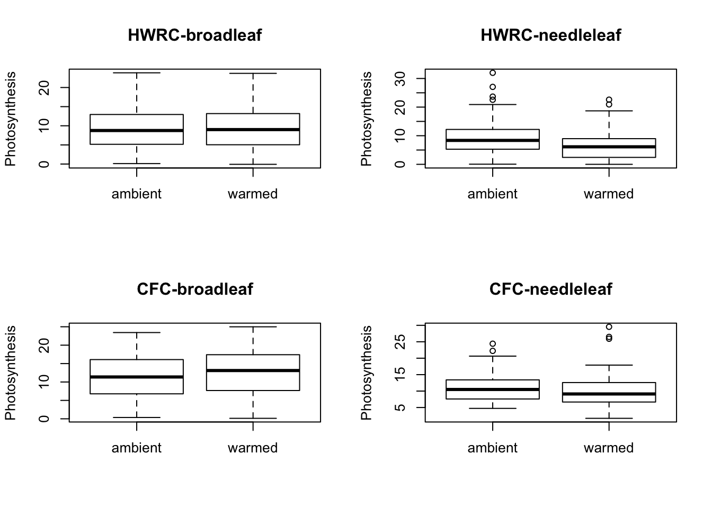
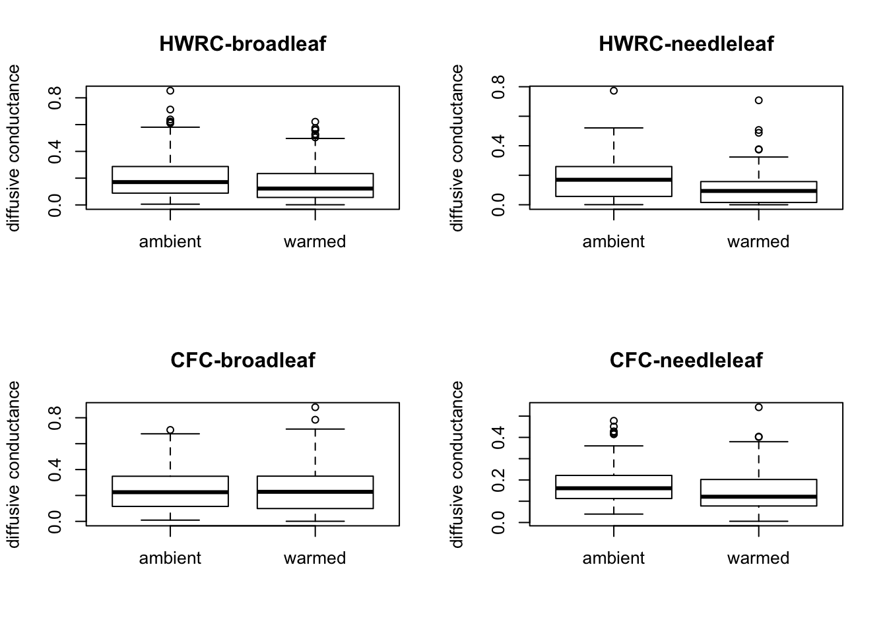
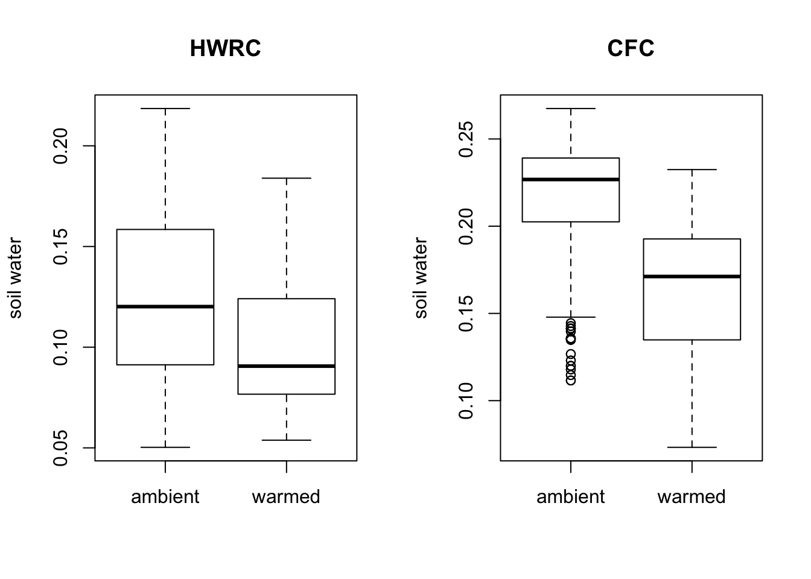
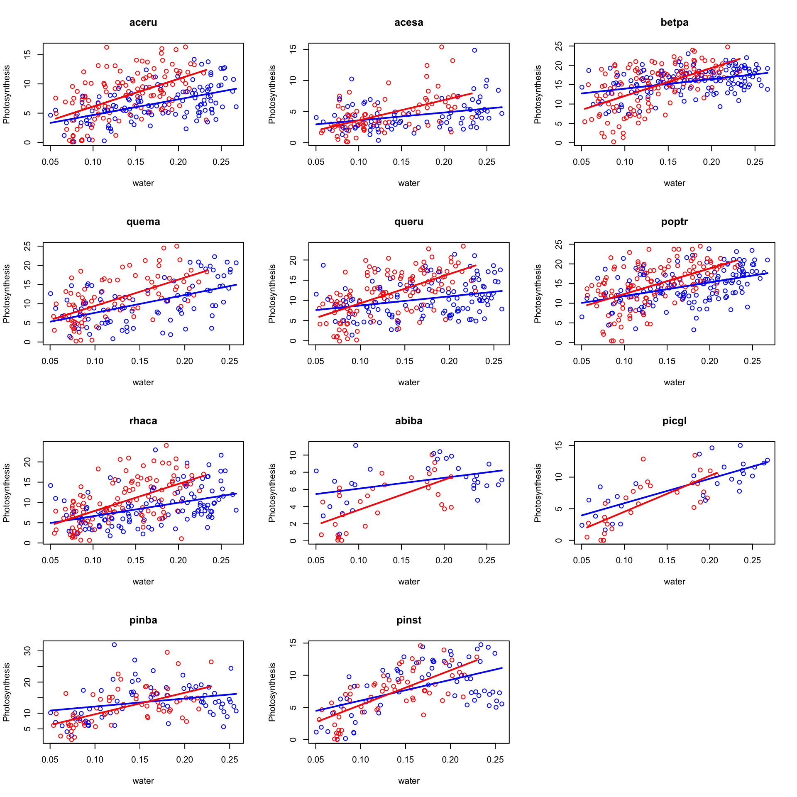
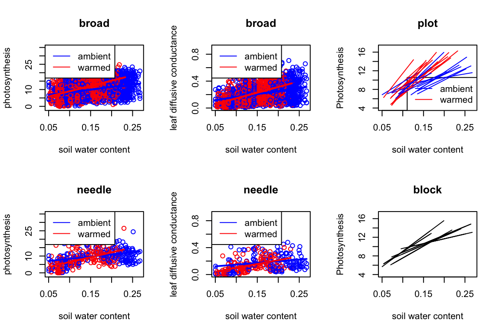
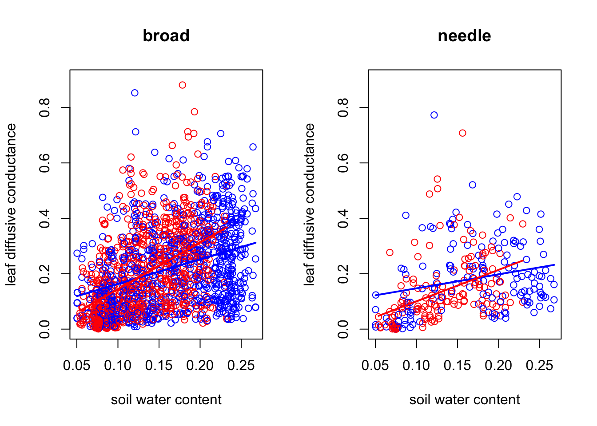

Last updated: 2018-12-06
workflowr checks: (Click a bullet for more information) ✔ R Markdown file: up-to-date
Great! Since the R Markdown file has been committed to the Git repository, you know the exact version of the code that produced these results.
✔ Environment: empty
Great job! The global environment was empty. Objects defined in the global environment can affect the analysis in your R Markdown file in unknown ways. For reproduciblity it’s best to always run the code in an empty environment.
✔ Seed:
set.seed(20181017)
The command set.seed(20181017) was run prior to running the code in the R Markdown file. Setting a seed ensures that any results that rely on randomness, e.g. subsampling or permutations, are reproducible.
✔ Session information: recorded
Great job! Recording the operating system, R version, and package versions is critical for reproducibility.
✔ Repository version: 93771b8
wflow_publish or wflow_git_commit). workflowr only checks the R Markdown file, but you know if there are other scripts or data files that it depends on. Below is the status of the Git repository when the results were generated:
Ignored files:
Ignored: .DS_Store
Ignored: .Rhistory
Ignored: .Rproj.user/
Untracked files:
Untracked: analysis/experiment.Rmd
Untracked: analysis/mulmodpre3.Rmd
Untracked: docs/figure/mulmodpre3.Rmd/
Unstaged changes:
Modified: analysis/mulmod.Rmd
| File | Version | Author | Date | Message |
|---|---|---|---|---|
| Rmd | 93771b8 | Dongyue Xie | 2018-12-06 | wflow_publish(“analysis/code.Rmd”) |
library(lme4)Loading required package: Matrixlibrary(MCMCglmm)Loading required package: codaLoading required package: apedatax=read.csv('/Users/dongyue/Documents/phd y1t1/data analysis/archive_edi/Reich2018NaturePaperDataAug2018.csv')
datax=datax[-c(25,26,580),]
colnames(datax)[3]='trt'
colnames(datax)[4]='plot'
colnames(datax)[13]='water'
colnames(datax)[10]='ps'
datax$plot=factor(datax$plot)
species=c("aceru", "acesa", 'betpa', "quema", "queru", 'poptr', 'rhaca', 'abiba', 'picgl', "pinba", "pinst")
needle=c('abiba','picgl','pinba','pinst')
datax$species2=factor(ifelse(datax$species %in% needle,'needle','broad'))
##plot boxplot of trt vs ps acroos species*site
par(mfrow=c(2,2))
boxplot(ps~trt,data=datax[datax$site=='hwrc'&datax$species2=='broad',],
main='HWRC-broadleaf',ylab='Photosynthesis')
boxplot(ps~trt,data=datax[datax$site=='hwrc'&datax$species2=='needle',],
main='HWRC-needleleaf',ylab='Photosynthesis')
boxplot(ps~trt,data=datax[datax$site=='cfc'&datax$species2=='broad',],
main='CFC-broadleaf',ylab='Photosynthesis')
boxplot(ps~trt,data=datax[datax$site=='cfc'&datax$species2=='needle',],
main='CFC-needleleaf',ylab='Photosynthesis')
par(mfrow=c(2,2))
boxplot(gs~trt,data=datax[datax$site=='hwrc'&datax$species2=='broad',],
main='HWRC-broadleaf',ylab='diffusive conductance')
boxplot(gs~trt,data=datax[datax$site=='hwrc'&datax$species2=='needle',],
main='HWRC-needleleaf',ylab='diffusive conductance')
boxplot(gs~trt,data=datax[datax$site=='cfc'&datax$species2=='broad',],
main='CFC-broadleaf',ylab='diffusive conductance')
boxplot(gs~trt,data=datax[datax$site=='cfc'&datax$species2=='needle',],
main='CFC-needleleaf',ylab='diffusive conductance')
par(mfrow=c(1,2))
boxplot(water~trt,data=datax[datax$site=='hwrc',],
main='HWRC',ylab='soil water')
boxplot(water~trt,data=datax[datax$site=='cfc',],
main='CFC',ylab='soil water')
##########################
#PLOT OF photosynthesis vs vwc
species=c("aceru", "acesa", 'betpa', "quema", "queru", 'poptr', 'rhaca', 'abiba', 'picgl', "pinba", "pinst")
#datax=na.omit(datax)
par(mfrow=c(4,3))
for (sp in species) {
dat=datax[datax$species==sp,]
amb=lm(ps~water,data=dat[dat$trt=='ambient',])
warm=lm(ps~water,data=dat[dat$trt=='warmed',])
plot(ps~water,data=dat,main=sp,ylab='Photosynthesis',
col=ifelse(dat$trt=='ambient',4,2))
xx=seq(0.05,0.27,length.out = 100)
lines(amb$model$water,amb$fitted.values,col=4,lwd=2)
lines(warm$model$water,warm$fitted.values,col=2,lwd=2)
}
#plot of species2: ps vs water
species2=c('broad','needle')
par(mfrow=c(1,2))
for (sp in species2) {
dat=datax[datax$species2==sp,]
amb=lm(ps~water,data=dat[dat$trt=='ambient',])
warm=lm(ps~water,data=dat[dat$trt=='warmed',])
plot(ps~water,data=dat,main=sp,ylab='photosynthesis',
col=ifelse(dat$trt=='ambient',4,2),ylim=c(-1,35),xlab='soil water content')
xx=seq(0.05,0.27,length.out = 100)
lines(amb$model$water,amb$fitted.values,col=4,lwd=2)
lines(warm$model$water,warm$fitted.values,col=2,lwd=2)
}
for (sp in species2) {
dat=datax[datax$species2==sp,]
amb=lm(gs~water,data=dat[dat$trt=='ambient',])
warm=lm(gs~water,data=dat[dat$trt=='warmed',])
plot(gs~water,data=dat,main=sp,ylab='leaf diffusive conductance',
col=ifelse(dat$trt=='ambient',4,2),ylim=c(0,0.9),xlab='soil water content')
xx=seq(0.05,0.27,length.out = 100)
lines(amb$model$water,amb$fitted.values,col=4,lwd=2)
lines(warm$model$water,warm$fitted.values,col=2,lwd=2)
}
##################
datas=na.omit(datax)
datas$ci=datas$ci
#year:doy as factor
datas$day=factor(datas$year):factor(datas$doy)
datas$day=factor(datas$day)#after some model selection...
mod1=lmer(ps~trt+species2+water+trt:species2+trt:water+(1|day)+(1|block)+(1|plot),data=datas)
#drop1(mod1ss,test='Chisq')
ss.mod1=summary(mod1)
mod2=lmer(gs~trt+species2+water+trt:species2+trt:water+(1|day)+(1|block)+(1|plot),data=datas)
#drop1(mod1ss,test='Chisq')
ss.mod2=summary(mod2)Coefficients, Standard deviation of random components:
round(ss.mod1$coefficients,2) Estimate Std. Error t value
(Intercept) 7.01 0.97 7.24
trtwarmed -2.65 0.73 -3.62
species2needle -0.78 0.46 -1.68
water 21.76 5.08 4.28
trtwarmed:species2needle -2.26 0.61 -3.70
trtwarmed:water 29.67 4.73 6.28round(c(sqrt(unlist(ss.mod1$varcor)),ss.mod1$sigma),2) day plot block
2.12 0.24 0.58 4.80 round(ss.mod2$coefficients,2) Estimate Std. Error t value
(Intercept) 0.14 0.02 5.86
trtwarmed -0.09 0.02 -5.25
species2needle -0.06 0.01 -5.24
water 0.52 0.13 4.16
trtwarmed:species2needle -0.02 0.02 -1.21
trtwarmed:water 0.63 0.11 5.58round(c(sqrt(unlist(ss.mod2$varcor)),ss.mod2$sigma),2) day plot block
0.06 0.00 0.01 0.12 mod3=lmer(ps~trt*(water+ci)+tleaf+VPG+(1|day)+(1|block)+(1|plot)+(1|species2),data=datas)Warning: Some predictor variables are on very different scales: consider
rescalingss.mod3=summary(mod3)round(ss.mod3$coefficients,2) Estimate Std. Error t value
(Intercept) 5.84 1.77 3.31
trtwarmed -5.84 1.12 -5.21
water 19.92 4.95 4.03
ci -0.01 0.00 -3.36
tleaf 0.51 0.05 10.27
VPG -5.41 0.33 -16.49
trtwarmed:water 19.84 4.74 4.19
trtwarmed:ci 0.02 0.00 4.08round(c(sqrt(unlist(ss.mod3$varcor)),ss.mod3$sigma),2) day plot block species2
2.12 0.28 0.48 1.11 4.47 mm=lmer(ps~water+trt+(1|day)+(1|block)+(1|plot)+(1|species2),data=datas,REML = 0)
round(drop1(mm,test='Chisq'),2)Single term deletions
Model:
ps ~ water + trt + (1 | day) + (1 | block) + (1 | plot) + (1 |
species2)
Df AIC LRT Pr(Chi)
<none> 11449
water 1 11462 15.02 < 2.2e-16 ***
trt 1 11457 9.86 < 2.2e-16 ***
---
Signif. codes: 0 '***' 0.001 '**' 0.01 '*' 0.05 '.' 0.1 ' ' 1mm=lmer(gs~water+trt+(1|day)+(1|block)+(1|plot)+(1|species2),data=datas,REML = 0)
round(drop1(mm,test='Chisq'),2)Single term deletions
Model:
gs ~ water + trt + (1 | day) + (1 | block) + (1 | plot) + (1 |
species2)
Df AIC LRT Pr(Chi)
<none> -2484.9
water 1 -2468.8 18.1 <2e-16 ***
trt 1 -2486.9 0.0 0.99
---
Signif. codes: 0 '***' 0.001 '**' 0.01 '*' 0.05 '.' 0.1 ' ' 1prior2=list(R = list(V = diag(2),nu=1),
G=list(G1=list(V=diag(2),nu=1,alpha.mu=rep(0,2),alpha.V=diag(2)*1e3),
G2=list(V=diag(2),nu=1,alpha.mu=rep(0,2),alpha.V=diag(2)*1e3),
G3=list(V=diag(2),nu=1,alpha.mu=rep(0,2),alpha.V=diag(2)*1e3)
))
set.seed(1234)
mulmod1=MCMCglmm(cbind(ps,water)~trait*trt,
random=~us(trait):day+idh(trait):block+
idh(trait):plot,rcov=~idh(trait):units,
prior = prior2,
family = c("gaussian","gaussian"),
data=datas[datas$species2=='needle',],nitt=15000,burnin = 5000,thin = 10,verbose = F)Warning: 'cBind' is deprecated.
Since R version 3.2.0, base's cbind() should work fine with S4 objectsround(summary(mulmod1)$solutions[,1:3],3) post.mean l-95% CI u-95% CI
(Intercept) 11.103 9.066 13.184
traitwater -10.931 -13.067 -8.947
trtwarmed -1.857 -2.755 -0.823
traitwater:trtwarmed 1.820 0.791 2.717Cov and Cor - day
poster.mode=apply(mulmod1$VCV, 2, posterior.mode)Warning in FUN(newX[, i], ...): posterior.mode expecting mcmc object
Warning in FUN(newX[, i], ...): posterior.mode expecting mcmc object
Warning in FUN(newX[, i], ...): posterior.mode expecting mcmc object
Warning in FUN(newX[, i], ...): posterior.mode expecting mcmc object
Warning in FUN(newX[, i], ...): posterior.mode expecting mcmc object
Warning in FUN(newX[, i], ...): posterior.mode expecting mcmc object
Warning in FUN(newX[, i], ...): posterior.mode expecting mcmc object
Warning in FUN(newX[, i], ...): posterior.mode expecting mcmc object
Warning in FUN(newX[, i], ...): posterior.mode expecting mcmc object
Warning in FUN(newX[, i], ...): posterior.mode expecting mcmc objectcov.day=matrix(poster.mode[1:4],2,2)
rownames(cov.day)=c('PS','Water')
colnames(cov.day)=c('PS','Water')
round(cov.day,3) PS Water
PS 12.813 0.078
Water 0.078 0.001round(cov2cor(cov.day),3) PS Water
PS 1.000 0.715
Water 0.715 1.000Sd: block, plot, random error
knitr::asis_output("\\scriptsize")rrn=rbind(round(sqrt(poster.mode[5:6]),2),
round(sqrt(poster.mode[7:8]),3),
round(sqrt(poster.mode[9:10]),2))
rownames(rrn)=c('block','plot','error')
colnames(rrn)=c('PS','Water')
rrn PS Water
block 0.240 0.020
plot 0.063 0.001
error 4.080 0.060prior2=list(R = list(V = diag(2),nu=1),
G=list(G1=list(V=diag(2),nu=1,alpha.mu=rep(0,2),alpha.V=diag(2)*1e3),
G2=list(V=diag(2),nu=1,alpha.mu=rep(0,2),alpha.V=diag(2)*1e3),
G3=list(V=diag(2),nu=1,alpha.mu=rep(0,2),alpha.V=diag(2)*1e3)
))
set.seed(1234)
mulmod2=MCMCglmm(cbind(ps,water)~trait*trt,
random=~us(trait):day+idh(trait):block+
idh(trait):plot,rcov=~idh(trait):units,
prior = prior2,
family = c("gaussian","gaussian"),
data=datas[datas$species2=='broad',],nitt=15000,burnin = 5000,thin = 10,verbose = F)Fixed effects:
round(summary(mulmod2)$solutions[,1:3],3) post.mean l-95% CI u-95% CI
(Intercept) 10.598 9.345 11.750
traitwater -10.428 -11.589 -9.176
trtwarmed 0.454 -0.062 0.971
traitwater:trtwarmed -0.490 -1.003 0.026Cov and Cor - day
poster.mode=apply(mulmod2$VCV, 2, posterior.mode)Warning in FUN(newX[, i], ...): posterior.mode expecting mcmc object
Warning in FUN(newX[, i], ...): posterior.mode expecting mcmc object
Warning in FUN(newX[, i], ...): posterior.mode expecting mcmc object
Warning in FUN(newX[, i], ...): posterior.mode expecting mcmc object
Warning in FUN(newX[, i], ...): posterior.mode expecting mcmc object
Warning in FUN(newX[, i], ...): posterior.mode expecting mcmc object
Warning in FUN(newX[, i], ...): posterior.mode expecting mcmc object
Warning in FUN(newX[, i], ...): posterior.mode expecting mcmc object
Warning in FUN(newX[, i], ...): posterior.mode expecting mcmc object
Warning in FUN(newX[, i], ...): posterior.mode expecting mcmc objectcov.day=matrix(poster.mode[1:4],2,2)
rownames(cov.day)=c('PS','Water')
colnames(cov.day)=c('PS','Water')
round(cov.day,3) PS Water
PS 8.911 0.083
Water 0.083 0.001round(cov2cor(cov.day),3) PS Water
PS 1.000 0.786
Water 0.786 1.000Sd: block, plot and random error
rrb=rbind(round(sqrt(poster.mode[5:6]),2),
round(sqrt(poster.mode[7:8]),3),
round(sqrt(poster.mode[9:10]),2))
rownames(rrb)=c('block','plot','error')
colnames(rrb)=c('PS','Water')
rrb PS Water
block 0.420 0.030
plot 0.043 0.013
error 4.770 0.030sessionInfo()R version 3.5.1 (2018-07-02)
Platform: x86_64-apple-darwin15.6.0 (64-bit)
Running under: macOS High Sierra 10.13.6
Matrix products: default
BLAS: /Library/Frameworks/R.framework/Versions/3.5/Resources/lib/libRblas.0.dylib
LAPACK: /Library/Frameworks/R.framework/Versions/3.5/Resources/lib/libRlapack.dylib
locale:
[1] en_US.UTF-8/en_US.UTF-8/en_US.UTF-8/C/en_US.UTF-8/en_US.UTF-8
attached base packages:
[1] stats graphics grDevices utils datasets methods base
other attached packages:
[1] MCMCglmm_2.26 ape_5.2 coda_0.19-2 lme4_1.1-18-1 Matrix_1.2-14
loaded via a namespace (and not attached):
[1] Rcpp_0.12.18 knitr_1.20 whisker_0.3-2
[4] magrittr_1.5 workflowr_1.1.1 splines_3.5.1
[7] MASS_7.3-50 cubature_1.4-1 lattice_0.20-35
[10] minqa_1.2.4 stringr_1.3.1 tools_3.5.1
[13] parallel_3.5.1 grid_3.5.1 nlme_3.1-137
[16] R.oo_1.22.0 corpcor_1.6.9 git2r_0.23.0
[19] htmltools_0.3.6 yaml_2.2.0 rprojroot_1.3-2
[22] digest_0.6.17 tensorA_0.36.1 nloptr_1.2.1
[25] R.utils_2.7.0 evaluate_0.11 rmarkdown_1.10
[28] stringi_1.2.4 compiler_3.5.1 backports_1.1.2
[31] R.methodsS3_1.7.1This reproducible R Markdown analysis was created with workflowr 1.1.1